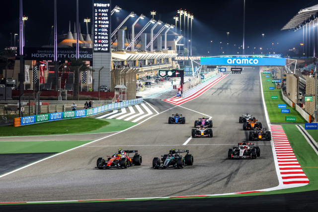
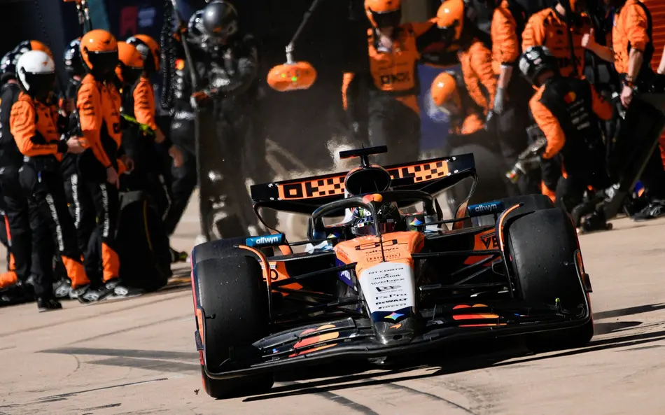
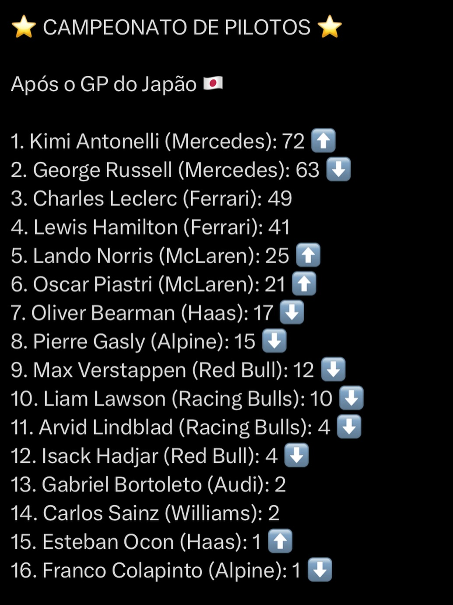
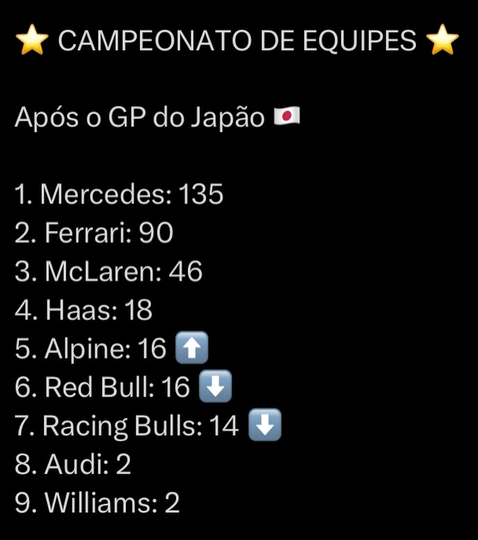

COMO ESTÁ O ANDAMENTO DA TEMPORADA 2026?
As equipes seguem se adaptando ao novo regulamento.

Foto tirada por: Kym Illman
Foto tirada por: Kym Illman
As equipes da Fórmula 1 estão em intensa fase de adaptação para 2026, focando em carros menores, mais leves (30kg a menos) e motores com 50% de potência elétrica. Mercedes e Ferrari lideram o desenvolvimento, enquanto o grid testa soluções para o gerenciamento de energia e novas aerodinâmicas ativas, após críticas sobre o comportamento do carro.
A temporada de 2026 marca a maior mudança de regras da era moderna da F1, forçando as equipes a equilibrar a eficiência energética com o desempenho aerodinâmico.


Após o GP do Japão de 2026, Andrea Kimi Antonelli (Mercedes) lidera o mundial de pilotos com 72 pontos, seguido por George Russell (63). A temporada é marcada por novas regras, motores revisados e a entrada da Audi e Cadillac. A Ferrari aparece competitiva, com Leclerc em terceiro.
| Posição | Piloto | Equipe | Pontos |
|---|---|---|---|
| 1° | Kimi Antonelli | Mercedes | 72 pts |
| 2° | George Russel | Mercedes | 63 pts |
| 3° | Charles Leclerc | Ferrari | 49 pts |
| 4° | Lewis Hamilton | Ferrari | 41 pts |
| 5° | Lando Norris | McLaren | 25 pts |
| Posição | Equipe | Pontos |
|---|---|---|
| 1° | Mercedes | 135 pts |
| 2° | Ferrari | 90 pts |
| 3° | McLaren | 46 pts |
| 4° | Haas | 18 pts |
| 5° | Alpine/Red bull | 16 pts |
Veja a classificação completa a seguir:


Observação: Os pilotos com 0 pontos não foram colocados nessa classificação, logo, todos os pilotos abaixo do 16° colocado estão com 0 pontos, sendo eles na respectiva ordem do 17° ao 22°:
(17°) Nico Hulkenberg, (18°) Alexander Albon, (19°) Valtteri Bottas, (20°) Sergio Pérez, (21°) Fernando Alonso e (22°) Lance Stroll.
Diga para nós do Paddock Club qual a sua opnião sobre esta temporada de 2026, quem você acha que vai ser o campeão? E a equipe de construtores? Quem vai ser o ultimo colocado ao fim do campeonato? Clique aqui e nos dê a sua opnião, queremos te ouvir!